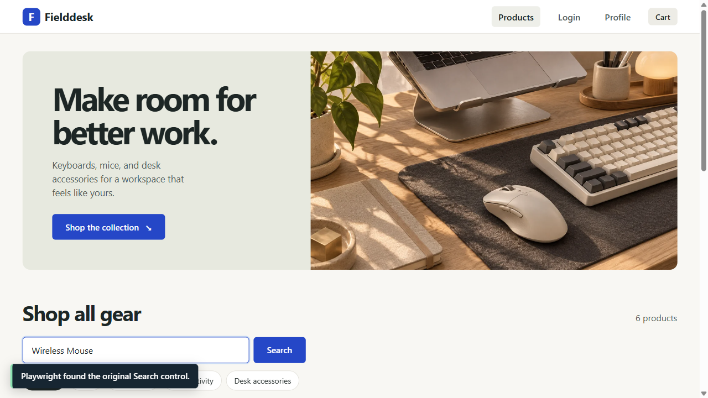
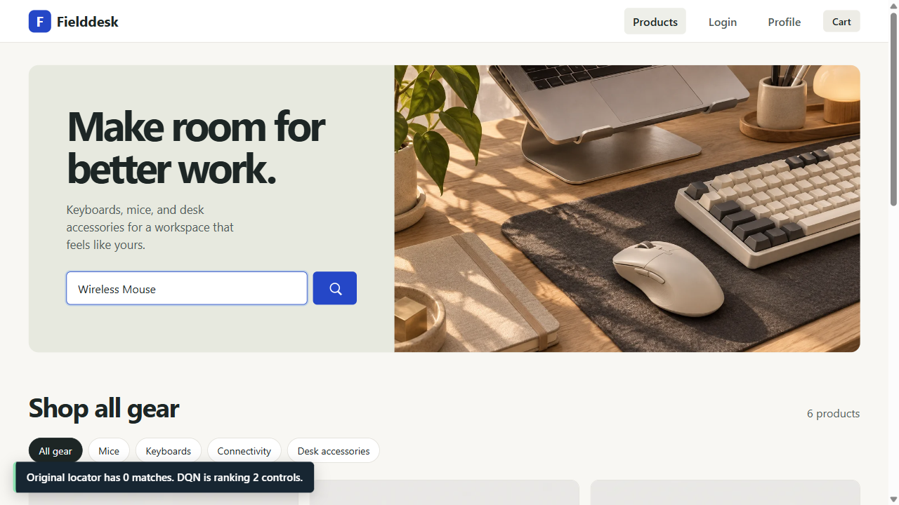
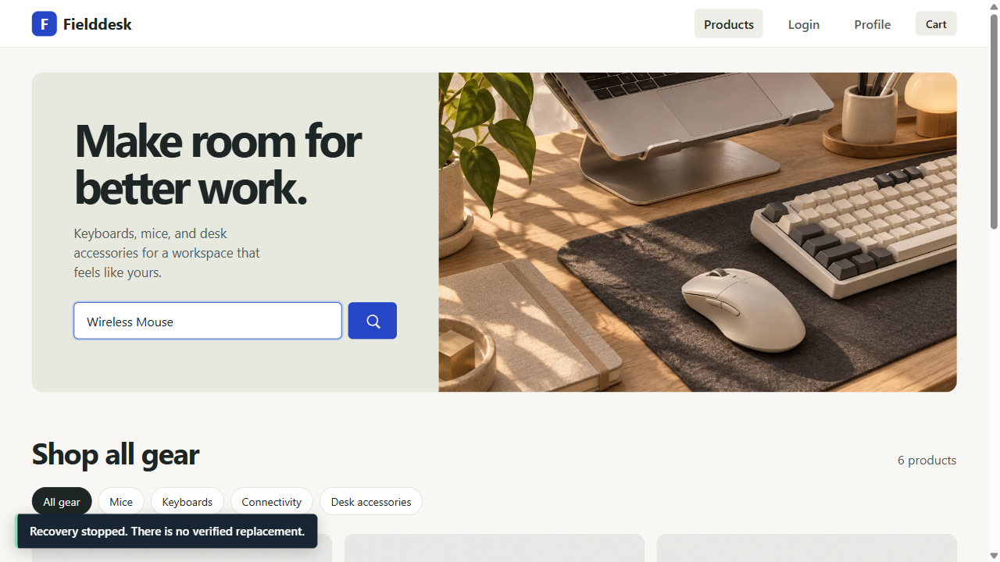
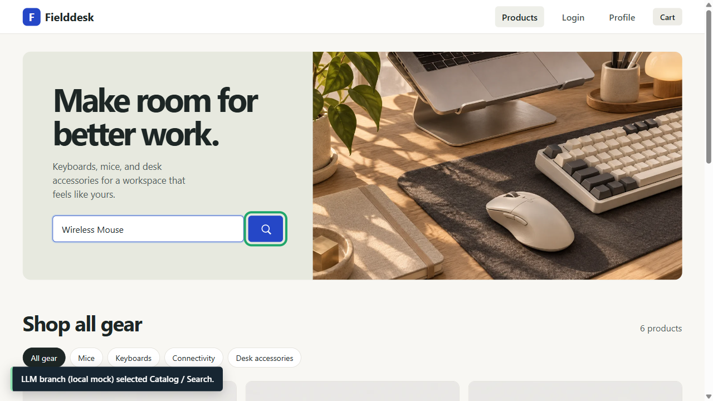
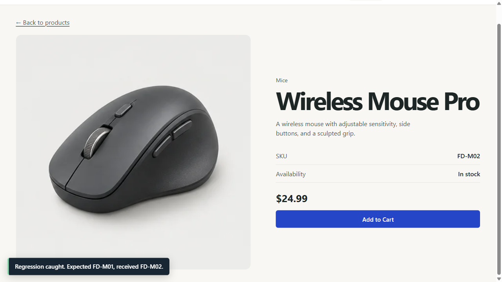

Fielddesk · Playwright recovery
Self-healing test report
Run passed · 5 scenarios executed · 74.9 seconds.
The Q-value is the trained agent’s estimate of future reward for a candidate action.
Full Playwright report · Raw results
Recovery workflow
PlaywrightRun the original locator
→One match?Check the live page
Unique locator
Use the original controlMissing or ambiguous locator
Capture public DOM candidates → DQN ranks them
Clear match → use DQN pickAmbiguous → ask LLM for a candidate ID
If there is no supported candidate, leave the step unresolved.
Playwright validates the target and runs the original action
↓Original test assertion determines pass or failure
Original locator · 4.0 s
Release A completes the search with the original locator
Original SKU assertion · Expected FD-M01 · Observed FD-M01 · Pass

Playwright found the original Search control. Playwright verified SKU FD-M01.
Playwright verified SKU FD-M01.Trained DQN · 20.1 s
DQN recovers a supported Search control without model access
- Original locator
#search-btn · 0 matches- Recovery decision time
- 15914 ms
- Selected candidate
- #0
- Replacement clicked
- Yes
The top-ranked candidate matched the original name and form scope.
DQN rankings| Candidate | Control | Form scope | Q-value | Selected |
|---|
| #0 | Search | Catalog |
5.501 | Yes |
Original SKU assertion · Expected FD-M01 · Observed FD-M01 · Pass
- Original locator
#search-btn · 0 matches- Recovery decision time
- 11404 ms
- Selected candidate
- #0
- Replacement clicked
- Yes
- Model
- Local Responses API mock
Multiple controls shared the original accessible name. The model returned a candidate from the shortlist.
DQN rankings| Candidate | Control | Form scope | Q-value | Selected |
|---|
| #0 | Search | Catalog |
5.501 | Yes |
| #1 | Search | Help center |
5.358 | – |
Original SKU assertion · Expected FD-M01 · Observed FD-M01 · Pass

Original locator has 0 matches. DQN is ranking 2 controls. LLM branch (local mock) selected Catalog / Search.
LLM branch (local mock) selected Catalog / Search. Playwright verified SKU FD-M01.
Playwright verified SKU FD-M01.Unresolved · 13.7 s
Ambiguous Search remains unresolved without a model
- Original locator
#search-btn · 0 matches- Recovery decision time
- 10734 ms
- Selected candidate
- None
- Replacement clicked
- No
Multiple controls shared the original accessible name. The model was unavailable. Playwright left the step unresolved.
DQN rankings| Candidate | Control | Form scope | Q-value | Selected |
|---|
| #0 | Search | Catalog |
5.501 | – |
| #1 | Search | Help center |
5.358 | – |
 Original locator has 0 matches. DQN is ranking 2 controls.
Original locator has 0 matches. DQN is ranking 2 controls.
Recovery stopped. There is no verified replacement.- Original locator
#search-btn · 0 matches- Recovery decision time
- 12349 ms
- Selected candidate
- #0
- Replacement clicked
- Yes
- Model
- Local Responses API mock
Multiple controls shared the original accessible name. The model returned a candidate from the shortlist.
DQN rankings| Candidate | Control | Form scope | Q-value | Selected |
|---|
| #0 | Search | Catalog |
5.501 | Yes |
| #1 | Search | Help center |
5.358 | – |
Original SKU assertion · Expected FD-M01 · Observed FD-M02 · Fail
 Original locator has 0 matches. DQN is ranking 2 controls.
Original locator has 0 matches. DQN is ranking 2 controls.
LLM branch (local mock) selected Catalog / Search.
Regression caught. Expected FD-M01, received FD-M02.